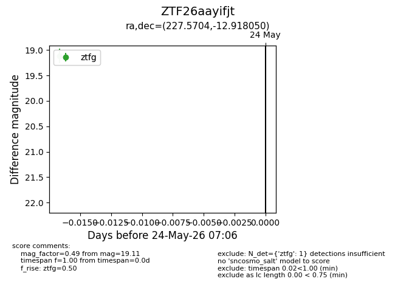
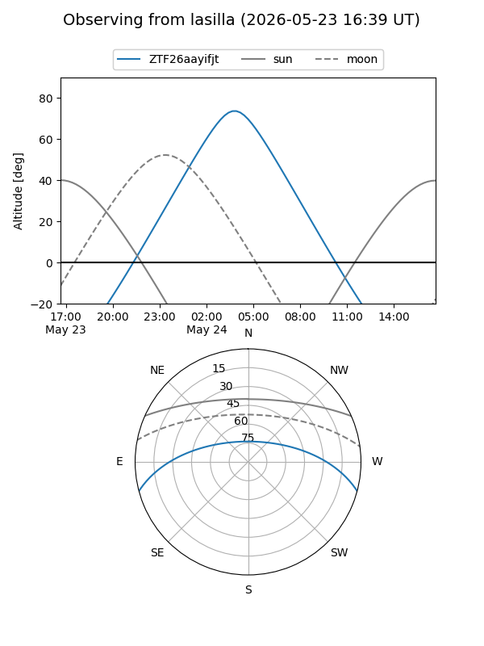
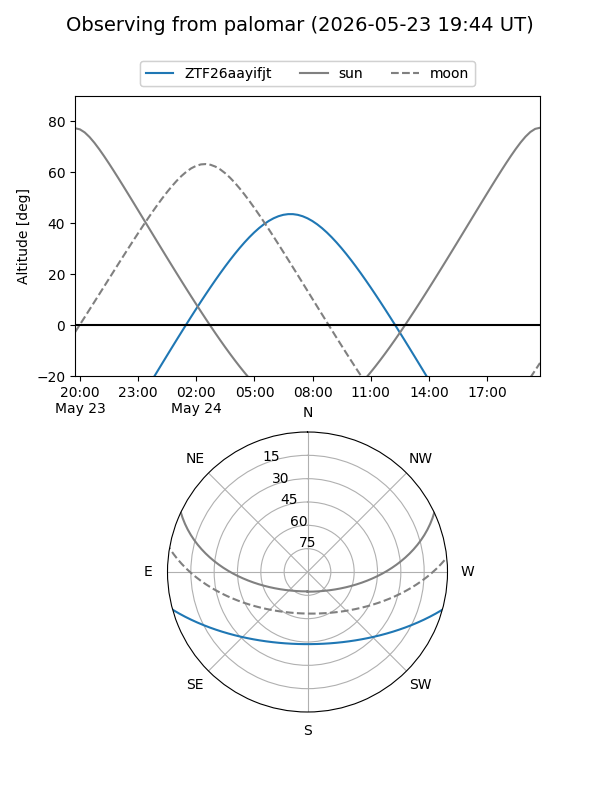

ZTF26aayifjt
Target ZTF26aayifjt at 2026-05-24 07:07
Aliases and brokers:
lsst-FINK: link
lsst-Lasair: link
lsst-ALeRCE: link
ztf-FINK: link
ztf-Lasair: link
ztf-ALeRCE: link
alt names
ZTF26aayifjt (ztf,fink_ztf)
Coordinates:
equatorial (ra, dec) = 227.5704,-12.91805
equatorial (HMS+DMS) = 15:10:16.89,-12:55:04.98
galactic (l, b) = (347.4565,+37.67252)
Flags:
Photometry:
last ztfg=19.11
1 ztfg detections
Lightcurve

Visibility


Additional plots